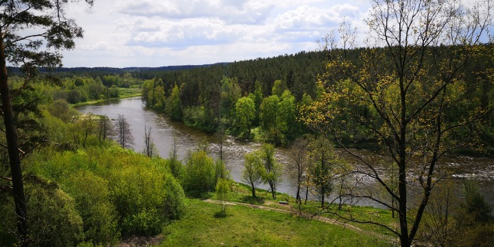

Populiarūs pažintiniai takai
Varnikų pažintinis takas
Ar žinojai, kad šalia Trakų (apie 20 km nuo Vilniaus) yra Varnikų pažintinis takas?
Šis takas puikiai tinka tiek keliaujantiems pėstute, tiek keliaujantiems dviračiu.
Jeigu nori nors trumpam atitrūkti nuo miesto šurmulio – ši vieta puikus pasirinkimas!
Takas tinka pasivaikščioti vieniems, su šeima, vaikais, ar su draugais. Įvedus
google „Varnikų takas” jums bus atvaizduotas visas maršrutas. Apie 3,5 km per Ilgelio
pelkę besitęsiantis takas visus čia atvyksiančius poilsiautojus veda ne tik per
nuostabius miškus ir pelkę, bet ir per įvairiapusišką draustinio įvairovę, kuri
apima pievas ir ežerėlius. Kad grožėtis gamta būtų dar patogiau, pažintiniame take
rasi stebėjimo aikšteles ir 10 poilsio vietų. Patikėk, po tokio žygio kibinai taps
dar skanesni.
Tako ilgis: 3,5 km
Adresas: Varnikų kaimas (Trakų kryptis)
Nuotraukos:
Dubravos rezervatinė apyrubė
Dubravos rezervatinė apyrubė yra unikali vieta. Šiame gamtiniame valstybiniame
rezervate, kuris priklauso Kauno marių regioniniam parkui, jau daugiau nei 50 metų
neprisilietęs joks žmogus. Gamta čia formuojasi pati, todėl ši vieta tokia ir žavi.
Dubravos rezervatinė apyrubė – vienintelė tokia Lietuvoje ir apima 120 ha plotą.
Apie ketvirtadalį teritorijos užima pelkė. Einant pažintiniu taku išties stebina
medžių aukštis, (net iki 150 m.) išgriuvę apsamanėję medžiai. Čia tikrai gali
pasijusti lyg nusikėlęs laiku į seną ir labai gražią girią.
Tako ilgis: 1,9 km
Adresas: Dubravos miškas, Samylų sen., Kauno r.
Nuotraukos:
Pūčkorių atodanga – pažintinis takas
Tai viena aukščiausių ir įspūdingiausių atodangų Lietuvoje. Važiuojant į šią vietą
rekomenduojame paruošti ir pasiimti su savimi termosą gėrimo ar kavos, šiek tiek
užkandukų, nes mūsų visų patogumui čia yra įrengtos terasos bei aikštelės su
pavėsinėmis. Galima atvykti ne tik su šeima, vaikais, draugais, bet ir vienam,
pasiėmus kokią gerą knygą, atsisėdus ant suoliuko, ramiai, gamtos apsuptyje
paskaityti bei pabūti su savimi. Nuostabaus grožio vieta, pažintinis takas vingiuoja
įvairiomis vietomis – miškais, palei upę, lygumas ir kalvas, krioklius, griuvėsius.
Pamatysi įvairių gražių gamtos vaizdų, bei galėsi daugiau sužinoti apie šią vietą
perskaičius ten esančius informacinius stendus. Po aktyvaus laiko gamtoje, visada
puiki mintis kokybiškai pailsėti, tad visus puikius viešbučių pasiūlymus Vilniuje
rasi čia: poilsio pasiūlymai Vilniuje.
Tako ilgis: apie 6 km
Adresas: Belmonto g. 17, Vilnius 01206
Nuotraukos:
Jurkiškio upelio pažintinis takas
Jeigu nemėgsti daug vaikščioti, bet nori gražių vaizdų – šis takas puikiai tiks. Vienas
geriausių metų laikų aplankyti šią vietą, turbūt vasarą, kai viskas aplink žalia.
Tačiau čia gera atvykti ir kitais metų sezonais. Visoje teritorijoje įrengti mediniai
lapteliai, suoliukai, takeliai. NoriuNoriuNoriu poilsio ekspertus maloniai nustebino
per nugriuvusius ant tako medžius sumontuoti tilteliai. Įspūdingai atrodo. Nors takas
neilgas, bet nusiteik, kad kojoms bus gera mankšta, nes laiptų gan nemažai.
Jurkiškio upelio taką rasi netoli Molėtų, tad tikrai nepraleisk progos pasidžiaugti
vasara ir aplankyk šį nuostabų ežerų kraštą.
Tako ilgis: 1,5 km
Adresas: Jurkiškio upl.
Nuotraukos:
Karmazinų pažintinis takas
Karmazinų pažintinis takas – tai tikras lobynas: čia gali rasti didžiausią pilkapyną
Vilniaus apylinkėse, plačiausią Neries vagą parko teritorijoje, aukščiausią skardį su
daugybe laiptelių į viršų ir daugybę vietų pasidaryti pikniką. Tako maršrute atsiveria
kvapą gniaužiantys vaizdai į Neries upę, senuosius miško masyvus ir natūralų
kraštovaizdį, kuris kinta priklausomai nuo metų laiko. Tako teritorijoje yra net
penkios tokios vietos, kuriose įrengti stalai, suolai, laužavietės bei pavėsinės –
puiki vieta pasislėpti nuo permainingo lietuviško oro.
Tako ilgis: apie 6 km
Adresas: Dūkšos, Vilniaus rajonas, Neries regioninis parkas
Nuotraukos:
Arlaviškių pažintinis takas (Kadagių slėnis)
Arlaviškių pažintinis takas – tai vienas iš įspūdingiausių pažintinių takų Lietuvoje,
kuris prieš keletą metų buvo pripažintas gražiausiu Lietuvoje! Šis takas įrengtas
kadagiais apaugusio šlaito viršuje, kur Nemunas platėdamas susilieja su Kauno mariomis,
suteikia unikalią galimybę pasigrožėti nuostabiais gamtos vaizdais bei pažinti Kauno
marių regioninio parko biologinę įvairovę. Informaciniai stendai išsamiai pasakoja
apie kadagyno susiformavimą, čia besiganiusių gyvulių įtaką bei užlietų kaimų
istorijas. Maršrutas yra gerai pritaikytas lankytojams – nuo automobilių stovėjimo
aikštelės veda medinių lentelių takas, kuris užtikrina patogų ir saugų keliavimą, o
tolimojoje maršruto dalyje įrengti mediniai laipteliai leidžia nusileisti iki pat Kauno
marių pakrantės.
Tako ilgis: 1.9 km
Adresas: Kadagių slėnio g., Arlaviškės, Kauno raj.
Nuotraukos:
Saidės pažintinis takas
Visai arti Vilniaus, lengva privažiuoti. Labai gražus trumpas takas. Pamatysi daug
įspūdingų akmenų, vingiuoja labai gražus Saidės upelis, didingas Stirnių piliakalnis,
seni ąžuolai. Stovint ties upių susitikimo vieta, atsiveria peizažas kuris nėra
tipiškas mūsų kraštui, o gal labiau net primena Skandinavijos šalis. Rekomenduotume
paeiti ir toliau už pažintinio tako palei upelį, nes abejose pusėse yra išminti
takeliai, o vaizdai tikrai labai gražūs, tarsi gamta būtų žmogaus nepaliesta.
Laipteliai gana senoki, kai kur trūksta vienos kitos lentos, bet problemų lipant
nebuvo. Jeigu esi gamtos mylėtojas, šią vietą, jeigu dar nebuvai, tikrai įsimylėsi.
NoriuNoriuNoriu poilsio ekspertai bei Isijunk poilsį Lietuvoje grupės nariai labai
rekomenduoja šią vietą!
Tako ilgis: 1 km
Adresas: Saidės upelis, Vilniaus apskritis
Nuotraukos:
Ekologinis pėsčiųjų „Žaliasis takas“
Šį taką rasi Aukštadvario regioniniame parke. Atstumas nuo Vilniaus apie 50 km. Gana
ilgas – apie 7,5 km. Šis pažintinis takas lankytojus traukia nepaprastai skaidriu
Spindžiaus ežero vandeniu, galimybe pasivaikščioti po senovinį mišką ir kitomis
gamtos grožybėmis. Poilsiautojai labai rekomenduoja šį taką, rašoma, kad Spindžiaus
miškas – tai vienas gražiausių ir vertingiausių parko miškų, apjuostas Strėvos upės
ir ežerų. Tautosakoje ypač pabrėžiamas upės sakralumas, nes ji išteka „prieš tekančią
saulę”. Be to, čia rasi ir Strėvos įgriuvą, tai apie 20 metrų gylio dubens formos
duobė, dažnai vadinama Velnio duobės seserimi. Tiems, kam patinka ilgi
pasivaikščiojimai, NoriuNoriuNoriu poilsio ekspertai rekomenduoja šį pažintinį taką,
jeigu ieškai ilgesnio žygio.
Tako ilgis: apie 7,5 km
Adresas: Aukštadvario regioninis parkas
Nuotraukos:
Šilėnų pažintinis takas
Neries regioniniame parke įrengtas Šilėnų pažintinis takas puikiai tinka aktyviam
laisvalaikiui. Tad apsimauk patogią avalynę, pasiimk su savimi vandens ir pirmyn!
Aplinka sutvarkyta, gražūs vaizdai prie upės, pelkės, medžiai, nuostabi gamta.
Pradėjus ėjimą pro pelkę, toliau sunkesnis kopimas. O pradėjus pro kaimą ir kapines,
lengviau. Ši vieta maloniai nustebins didžiule kraštovaizdžio įvairove: etnokultūrinis
Šilėnų kaimas, stebuklingi šaltiniai, Naujosios Rėvos piliakalnis, lietuviškų
orchidėjų pelkė ir daug kitų įdomių vaizdų.
Tako ilgis: apie 6 km
Adresas: Šilėnų kaimas, Neries regioninis parkas
Nuotraukos: 
Ribiškių pažintinis takas
Šis takas prasideda ir pasibaigia prie Minsko pl. 14 esančio viešbučio. Prie įvažiavimo
yra daug parkavimosi vietų. Naudojamas tiek pėsčiųjų, tiek slidininkų. Šiame take yra
įkalnių ir nuokalnių, tačiau neskubant pasigrožėsite puikiais vaizdais, kurie atsiveria
nuo kalvų. Čia gera pasivaikščioti ne tik vasarą, pavasarį, rudenį, bet ir žiemą.
Takas prižiūrimas ir puikiai sužymėtas, tad tikrai nepasiklysite.
Tako ilgis: apie 6 km
Adresas: Minsko pl. 14, Vilnius
Nuotraukos: